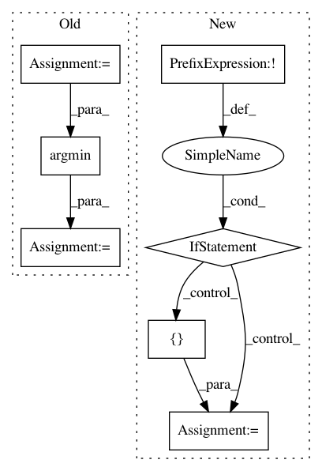

9d941d30962c211971ec316bf40c2ebfbf28a567,src/orion/analysis/lpi_utils.py,,lpi,#Any#Any#Any#Any#Any#,64
Before Change
)
data = to_numpy(trials, space)
data = flatten_numpy(data, flattened_space)
model = train_regressor(model, data, **kwargs)
best_point = data[numpy.argmin(data[:, -1])]
results = modes[mode](best_point, flattened_space, model, n_points)
return results
After Change
Last column is the objective predicted by the model for a given point.
Parameters
----------
point: numpy.ndarray
A tuple representation of the best trials, (hyperparameters + objective)
space: Space object
A space object from an experiment. It must be flattened and linearized.
model: `sklearn.base.RegressorMixin`
Trained regressor used to compute predictions on the grid
n_points: int
Number of points for each dimension on the grid.
grid = numpy.zeros((len(space), n_points, len(space) + 1))
for i, dim in enumerate(space.values()):
grid[i, :, :] = point
grid[i, :, i] = numpy.linspace(*dim.interval(), num=n_points)
grid[i, :, -1] = model.predict(grid[i, :, :-1])
return grid
In pattern: SUPERPATTERN
Frequency: 3
Non-data size: 7
Instances
Project Name: Epistimio/orion
Commit Name: 9d941d30962c211971ec316bf40c2ebfbf28a567
Time: 2021-02-24
Author: xavier.bouthillier@umontreal.ca
File Name: src/orion/analysis/lpi_utils.py
Class Name:
Method Name: lpi
Project Name: prody/ProDy
Commit Name: bb958949caaba2341ae5662c484d5106d68e4aed
Time: 2019-04-15
Author: hongchun@pitt.edu
File Name: prody/ensemble/functions.py
Class Name:
Method Name: refineEnsemble
Project Name: prody/ProDy
Commit Name: 54a02c7a3ca3cce7e62f92e0a27244d27f8d9e83
Time: 2019-02-08
Author: hongchun@pitt.edu
File Name: prody/ensemble/functions.py
Class Name:
Method Name: refineEnsemble